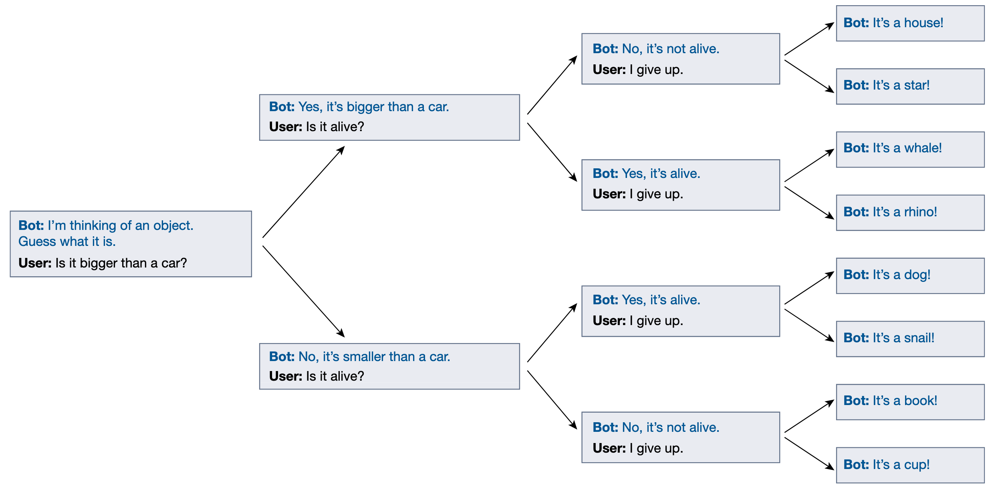

Understanding Large Language Models
28 November, 2024
What is a Large Language Model?
- Neural network trained on vast amounts of text data.
- Outputs a distribution over all possible tokens, conditioned on input sequence.
- LLMs undergo three key stages of training:
How do LLMs generate text?
\[ \newcommand{\purple}[1]{\color{purple}{#1}} \newcommand{\red}[1]{\color{red}{#1}} \newcommand{\blue}[1]{\color{blue}{#1}} \] \[\purple{P(x_{i+1}} \mid \blue{\text{Context}}, \red{\text{Model}})\]
- \(\purple{\text{Next token}}\)
- \(\blue{\text{The input sequence}:\ x_1, \ldots, x_i}\)
- \(\red{\text{The learned model}}\)
How do LLMs generate text?
The Space Of All Possible Outputs
Figure from Shanahan, McDonell, and Reynolds (2023)
What Do LLMs Learn?
Syntax and grammar
Semantics, pragmatics
World knowledge is statistical (associational) and not grounded in direct experience or sensory input
They can simulate reasoning and planning, but can they actually reason and plan (Kambhampati 2024)?
Can LLMs Reason?
Example Prompt
A farmer needs to transport a wolf, a goat, and a cabbage across a river using a small boat. The boat can carry only the farmer and one other item (either the wolf, the goat, or the cabbage) at a time. However, if left together without the farmer’s supervision: The wolf will eat the cabbage. The goat will eat the wolf. The challenge is to figure out how the farmer can get all three items across the river safely. What is the sequence of moves that the farmer needs to make?
Output Example
This is a classic puzzle with a twist! Here’s the step-by-step solution for safely transporting the wolf, goat, and cabbage across the river:
1. First trip: The farmer takes the goat across the river and leaves it on the other side.
2. Second trip: The farmer returns alone to the original side.
3. Third trip: The farmer takes the wolf across the river.
4. Fourth trip: The farmer leaves the wolf on the other side but takes the goat back to the original side.
5. Fifth trip: The farmer takes the cabbage across the river and leaves it with the wolf.
6. Sixth trip: The farmer returns alone to the original side.
7. Seventh trip: The farmer takes the goat across the river.Now, all three (wolf, goat, and cabbage) are safely across the river, and the puzzle is solved!
Key point: By taking the goat back on the fourth trip, the farmer ensures that neither the wolf nor the goat are left together, and neither are the goat and the cabbage left together.
Manhole Covers: Why Are They Round?

Manhole Covers: Why Are They Round?
- The human body that had to fit through the hole is round.
- A circle gives a maximum opening for a minimum surface area.
- Heavy round covers can be rolled rather than lifted into position.
- They were easier and cheaper to manufacture than square pit covers of the same materials.
- A circle has a constant diameter and won’t fall into the pit if rotatedthe wrong way – a tricky problem to remedy if the access cover weighs well over 100kg as concrete and iron covers did.
Sycophancy
According to Sharma et al. (2023), LLMs are often programmed to be sycophantic, meaning they will say whatever the user wants to hear. This can be problematic in scientific discussions, but can be allowed for by prompting.
Example Prompt
So sycophancy is basically a result of training an LLM to respect human preferences?
Output Example
Yes, that’s a good way to put it - it’s essentially an unintended consequence of training models to be “helpful” and “preferred” by humans. The paper shows this happens through several key mechanisms…
Prompting
Prompting guides the model through its space of possible outputs
\(\purple{P(x_{i+1}} \mid \blue{\text{Context}}, \red{\text{Model}})\)
- Prompting guides the LLM along specific paths in its space of possible documents.
- Every token in a prompt reduces the number of potential outcomes, helping the model generate relevant responses.
- Without a prompt, all outputs are possible.
- As tokens are added, the range of possible outputs shrinks, making the model’s behavior more predictable.
How Prompting Reduces Uncertainty
- Each token conditions the model’s next prediction
- With more context, the uncertainty (entropy) decreases, guiding the model towards a more specific output.
The Power of Prompting: Why It Matters
- Controls the behaviour of LLMs, steering them toward relevant outputs.
- Without effective prompting, the full potential of an LLM remains untapped, as it may generate irrelevant or misleading outputs.
Prompting allows us to:
- Navigate the vast space of possible outputs.
- Achieve more controlled and useful results.
Contexts are combinatorial:
- We do not know how a model will behave conditioned on all possible contexts. The output is highly contingent on the prompt.
Prompt Engineering
- We treat LLMs as black boxes
- We use engineering approaches or trial and error to guide their behaviour.
References

Berner Fachhochschule | Bern University of Applied Sciences